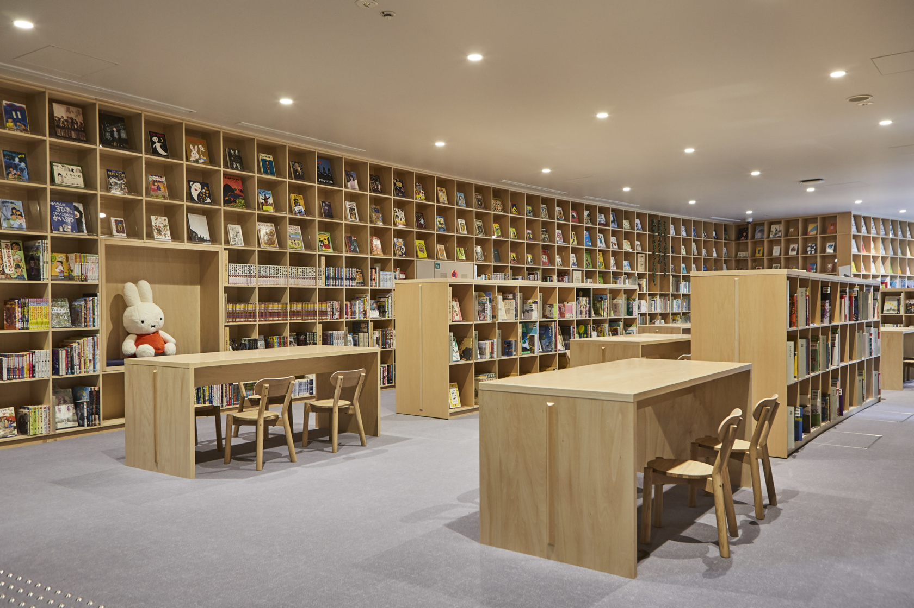
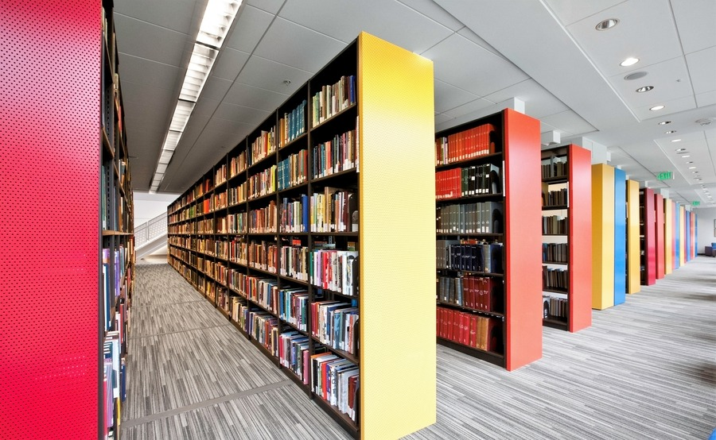
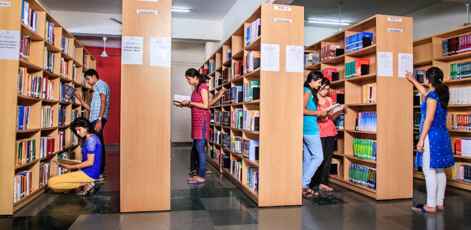
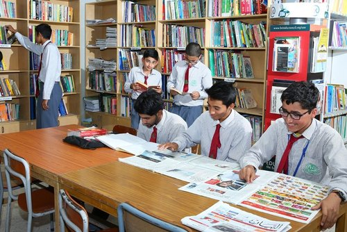
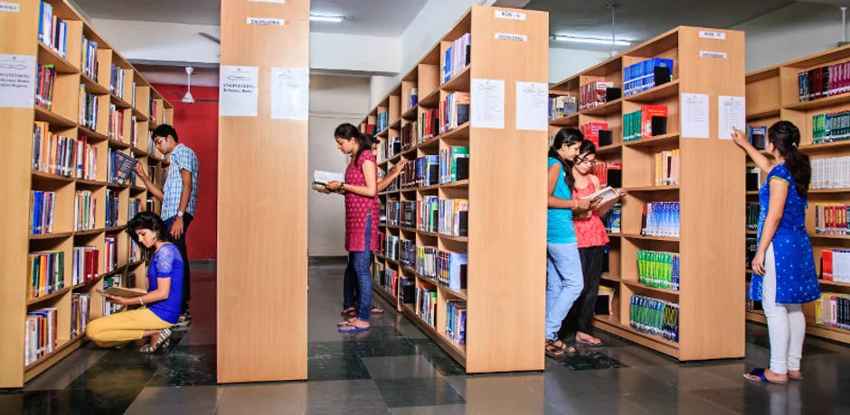
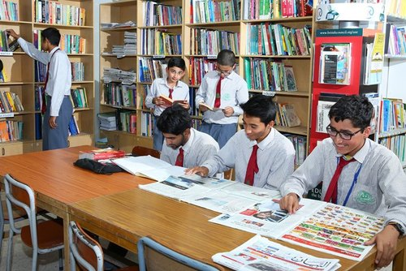
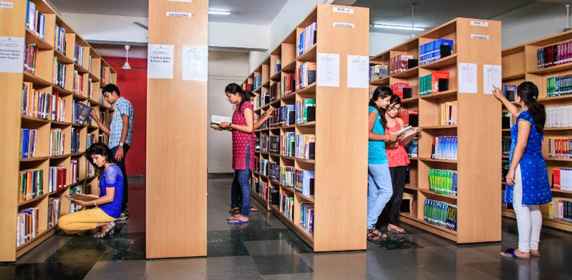
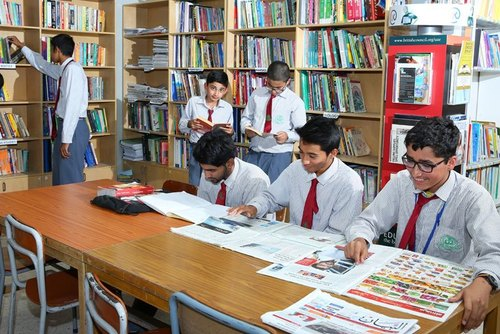
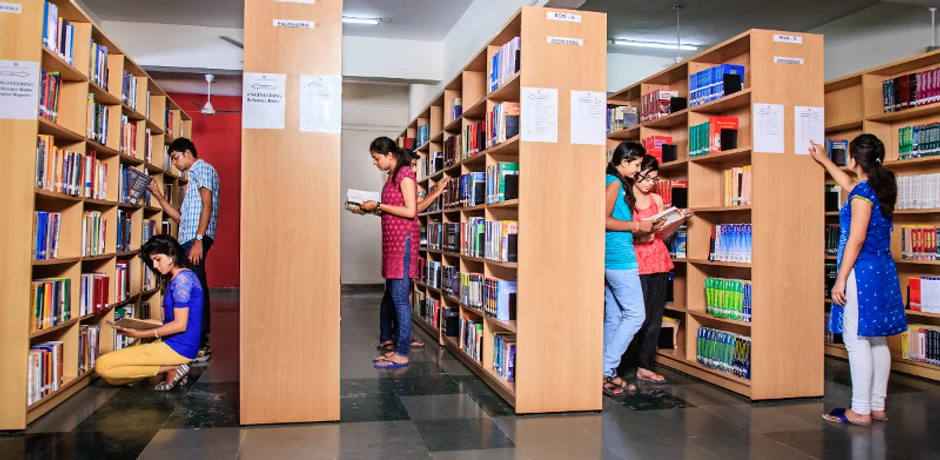
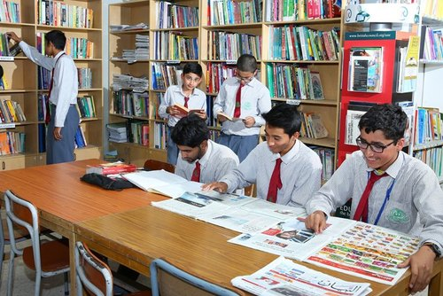

Gallery


 





Libraries are places of information. When most people think "library" they think books. ... More than just books, libraries are places of information, offering people free access to a wealth of information that they often can't find elsewhere, whether online, in print or in person.
It gives me great pleasure to welcome you to Ravindra Institute of Techology Library. The RITL is the latest Institute. i.e smart library in Andhra Pradesh, a wide green surrounding area and is an internationally renowned center of reading environment. The RIT Library would like to support you in your studies and in making good use of your knowledge by using library services; we will help you to locate, select and acquire the information you need from what may seem like a rather daunting mountain of material. But in today's knowledge-based society we rely on knowing the section of this information that is relevant to our field of work and area of life, particularly those of us who are involved in developing strong knowledge-based society. The Library also created Green Library Learning Environment by planting thousands of plants around the library and established Digital Library services through providing mobile apps to access e-Resources from online and offline, provided specialized system workstations where software installed systems for visually-challenged students learning. The Ravindra Institute of Technology Library continually works to further the development of its services. We aim to provide you with the best possible services. :- Librarian

